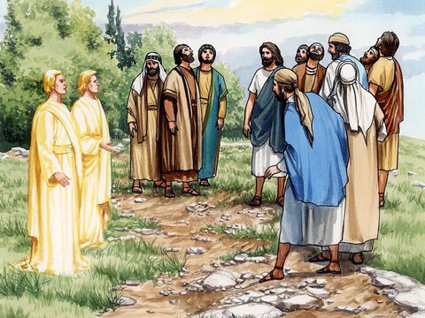
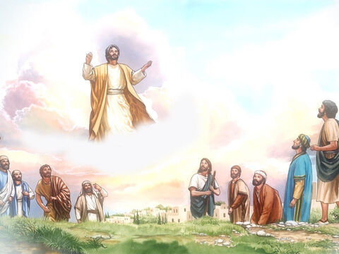
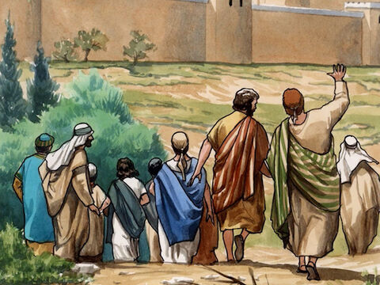
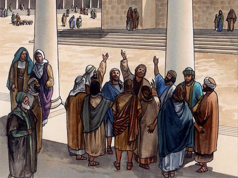

Lord Jesus Ascends To Heaven
And he led them out as far as to Bethany, and he lifted up his hands, and blessed them.
And it came to pass, while he blessed them, he was parted from them, and carried up into heaven.
Luke 24:50-51
And while they looked stedfastly toward heaven as he went up, behold, two men stood by them in white apparel;
Which also said, Ye men of Galilee, why stand ye gazing up into heaven? this same Jesus, which is taken up from you into heaven, shall so come in like manner as ye have seen him go into heaven.
Acts 1:10-11
And they worshipped him, and returned to Jerusalem with great joy:
And were continually in the temple, praising and blessing God. Amen.
Luke 24:50-53
- 
- 
- 
- 